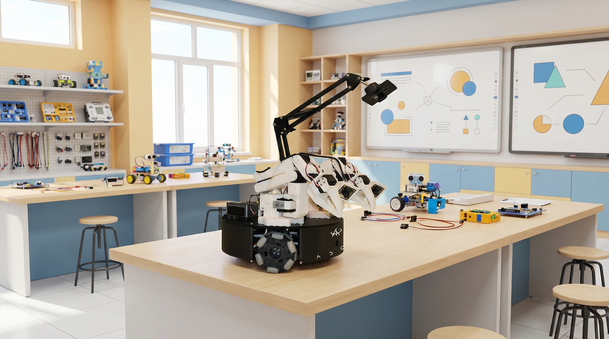

DORA Robotics
ADORA 1 Nano Educator Toolkit
A classroom-ready robotics toolkit with curriculum guides, lab exercises, and deployment documentation for K-12 and university programs.
Toolkit Modules
Everything educators need to teach robotics with confidence
The ADORA 1 Nano toolkit is packaged for practical teaching, guided instruction, and repeatable classroom deployment.

Curriculum Guides
Ready-to-teach curriculum guides help instructors introduce robotics, AI concepts, perception, and manipulation through progressive lesson plans tailored for K-12 and university learners.

Lab Exercises & Deployment Documentation
Guided lab exercises and clear deployment documentation support setup, classroom operation, and long-term program rollout, making it easier for schools to scale robotics learning.
Learning Pathways
Built for both foundational learning and advanced instruction
Use the same platform across age groups with pathway-specific teaching goals, activity depth, and deployment guidance.

K-12 Classroom Learning
Introduce robotics through age-appropriate lessons, guided practice, and visual demonstrations that fit school timetables and maker spaces.

University Lab Instruction
Support undergraduate and graduate coursework with deeper labs covering perception, manipulation, systems integration, and AI-enabled robotics.

Project-Based Labs
Turn lessons into capstone challenges, showcase activities, and collaborative lab exercises that reinforce real-world problem solving.

Instructor Enablement
Equip teachers and program leads with rollout checklists, deployment notes, and support pathways to sustain adoption across terms.
Program Details
Teaching resources packaged for adoption
A deployment-focused overview of what schools and universities receive with the ADORA 1 Nano Educator Toolkit.
| Category | Included | Details |
|---|---|---|
| Curriculum | Instructor guides | Structured teaching plans, pacing suggestions, and classroom facilitation notes. |
| Student learning sequence | Progressive content that scales from introductory K-12 exposure to university lab depth. | |
| Assessment guidance | Learning outcomes and checkpoints for practical evaluation. | |
| Lab Exercises | Hands-on labs | Experiments for setup, perception, manipulation, and integrated robotics workflows. |
| Project activities | Classroom challenges and project-based exercises to reinforce applied learning. | |
| Adaptable depth | Exercises suitable for both guided K-12 delivery and independent university exploration. | |
| Deployment | Setup documentation | Instructions for classroom preparation, onboarding, and equipment readiness. |
| Operational guidance | Best practices for faculty, lab managers, and school technical teams. | |
| Rollout support | Documentation that helps institutions replicate success across courses, grades, and cohorts. |
Get the Educator Toolkit